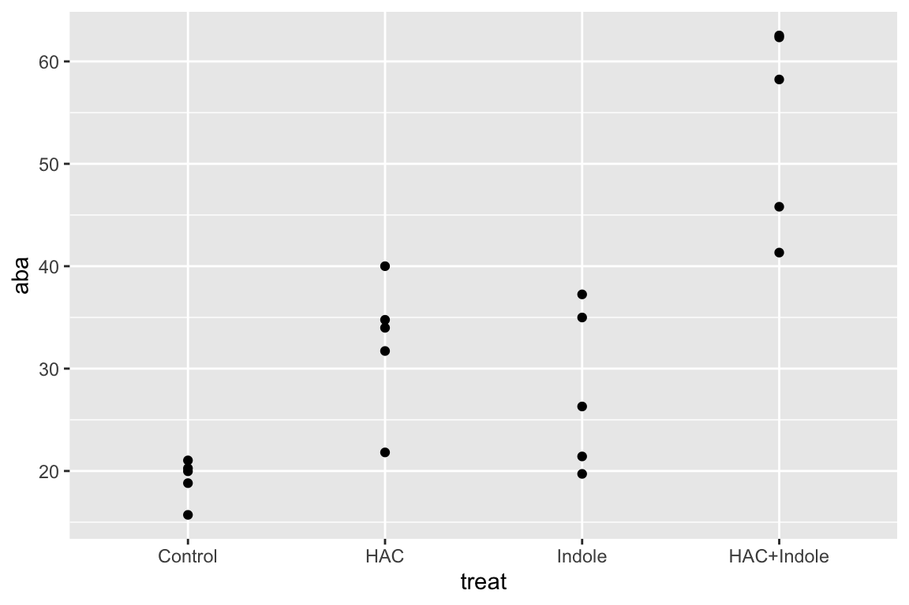
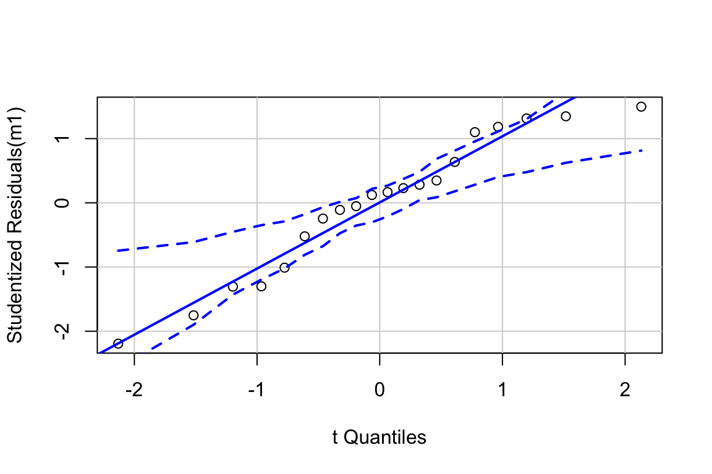
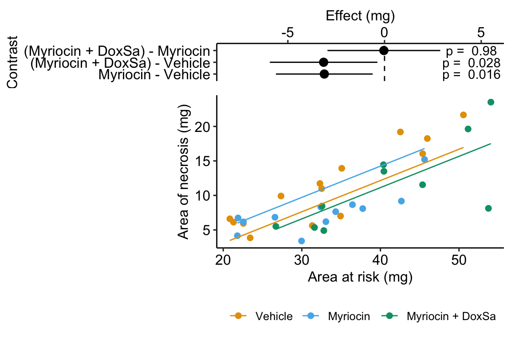

Chapter 15 Linear models with two categorical \(X\) – Factorial designs (“two-way ANOVA”)
15.1 Factorial experiments
A factorial experiment is one in which there are two or more factor variables (categorical \(X\)) that are crossed, resulting in a group for each combination of the levels of each factor. Factorial experiments are used to estimate the interaction effect between factors. Interaction effects were introduced in Chapter xxx, Models with a added covariate. Remember the key to interactions – two factors interact when the effect of one factor depends on the level of the other factor. Interactions are ubiquitous, although sometimes they are small enough to ignore with little to no loss of understanding.
15.2 Example 1: Maize defense response
This chapter uses data from an experiment measuring the effect of two defense signals on the defense response in Maize plants. In response to herbivory from insects, maize, and other plants, release multiple, chemical signals into the air (chemicals that evaporate into the air are known as volatile compounds). These chemicals signal the plant, and neighboring plants, to secrete anti-herbivory hormones, including abcisic acid and jasmonic acid. The researchers investigated the effects of two volatile compounts, (Z)‐3‐hexenyl acetate (HAC) and Indole, on the defense response both each without the other and in combination.
The example data come from Figure 1a, which is the effect of HAC and Indole on tissue concentrations of the hormone abcisic acid (ABA). The design is fully crossed with two factors, each with two levels: \(hac\), with levels “HAC-” and “HAC+”, and \(indole\), with levels (“Indole-” and “Indole+”). A good way to visualize the treatment combinations in a crossed design is with a \(m \times p\) table showing all combinations of the \(m\) levels of factor 1 (\(hac\)) against the \(p\) levels of factor 2 (\(indole\)).
| HAC- | HAC+ | |
|---|---|---|
| Indole- | Control | HAC |
| Indole+ | Indole | HAC+Indole |
15.2.1 Analysis
15.2.1.1 Examine the data

Too few points for box plot. control variance is small. No obvious implausible points. fit with lm but recognize small n warning for any inference.
15.2.1.3 Model check

A plausible sample from a Normal distribution.

##
## Suggested power transformation: -0.7343415A bit of increase in variance with mean.
15.2.1.4 Inference from the model
| Estimate | Std. Error | t value | Pr(>|t|) | 2.5 % | 97.5 % | |
|---|---|---|---|---|---|---|
| (Intercept) | 33.401 | 1.613 | 20.702 | 0.000 | 29.981 | 36.822 |
| hac1 | -9.853 | 1.613 | -6.107 | 0.000 | -13.273 | -6.433 |
| indole1 | -7.593 | 1.613 | -4.706 | 0.000 | -11.013 | -4.172 |
| hac1:indole1 | 3.205 | 1.613 | 1.986 | 0.064 | -0.216 | 6.625 |
| hac | indole | emmean | SE | df | lower.CL | upper.CL |
|---|---|---|---|---|---|---|
| HAC- | Indole- | 19.16 | 3.23 | 16 | 12.32 | 26.00 |
| HAC+ | Indole- | 32.46 | 3.23 | 16 | 25.62 | 39.30 |
| HAC- | Indole+ | 27.94 | 3.23 | 16 | 21.10 | 34.78 |
| HAC+ | Indole+ | 54.05 | 3.23 | 16 | 47.21 | 60.89 |
m1_pairs <- contrast(m1_emm,
method = "revpairwise",
simple = "each",
combine = TRUE,
adjust = "none") %>%
summary(infer = TRUE)
knitr::kable(m1_pairs, digits = 2)| indole | hac | contrast | estimate | SE | df | lower.CL | upper.CL | t.ratio | p.value |
|---|---|---|---|---|---|---|---|---|---|
| Indole- | . | (HAC+) - (HAC-) | 13.30 | 4.56 | 16 | 3.62 | 22.97 | 2.91 | 0.01 |
| Indole+ | . | (HAC+) - (HAC-) | 26.12 | 4.56 | 16 | 16.44 | 35.79 | 5.72 | 0.00 |
| . | HAC- | (Indole+) - (Indole-) | 8.78 | 4.56 | 16 | -0.90 | 18.45 | 1.92 | 0.07 |
| . | HAC+ | (Indole+) - (Indole-) | 21.59 | 4.56 | 16 | 11.92 | 31.27 | 4.73 | 0.00 |
m1_interaction <- contrast(m1_emm,
interaction = c("revpairwise"),
by = NULL) %>%
summary(infer = TRUE)
m1_interaction %>%
kable(digits = c(1,1,1,2,0,2,1,2,3)) %>%
kable_styling()| hac_revpairwise | indole_revpairwise | estimate | SE | df | lower.CL | upper.CL | t.ratio | p.value |
|---|---|---|---|---|---|---|---|---|
| (HAC+) - (HAC-) | (Indole+) - (Indole-) | 12.8 | 6.45 | 16 | -0.86 | 26.5 | 1.99 | 0.064 |
15.2.1.5 Plot the model
xxx if interested in synergy plot the coefficients! this is what we want. When would we want to plot all simple effects?
15.2.2 A factorial model adds an interaction effect to the coefficients table
A factorial design allows a researcher to estimate the interaction between two factors. An interaction is an effect between two variables in a linear model. The interaction effect is the coefficient \(beta_3\) in the linear model
\[\begin{equation} aba = \beta_0 + \beta_1 hac_{HAC^+} + \beta_2 indole_{Indole^+} + \beta_3 hac_{HAC^+}:indole_{Indole^+} +\varepsilon \tag{15.1} \end{equation}\]
\(hac_{HAC^+}\) and \(indole_{Indole^+}\) are dummy-coded indicator variables indicating group membership. \(hac_{HAC^+} : indole_{Indole^+}\) is a dummy-coded variable for the interaction between \(hac\) and \(indole\). The value of this variable is the product of the two indicator variables in the interaction (\(hac_{HAC^+}\) and \(indole_{Indole^+}\)), which can be verified with the model matrix (which here, is computed from the subset of the data that includeds only the first two rows of each treatment combination)
| (Intercept) | hac1 | indole1 | hac1:indole1 | |
|---|---|---|---|---|
| 1 | 1 | 1 | 1 | 1 |
| 2 | 1 | 1 | 1 | 1 |
| 6 | 1 | -1 | 1 | -1 |
| 7 | 1 | -1 | 1 | -1 |
| 11 | 1 | 1 | -1 | -1 |
| 12 | 1 | 1 | -1 | -1 |
| 16 | 1 | -1 | -1 | 1 |
| 17 | 1 | -1 | -1 | 1 |
The coefficient table is
| Estimate | Std. Error | t value | Pr(>|t|) | 2.5 % | 97.5 % | |
|---|---|---|---|---|---|---|
| (Intercept) | 33.40 | 1.61 | 20.7 | 0.000 | 29.98 | 36.82 |
| hac1 | -9.85 | 1.61 | -6.1 | 0.000 | -13.27 | -6.43 |
| indole1 | -7.59 | 1.61 | -4.7 | 0.000 | -11.01 | -4.17 |
| hac1:indole1 | 3.20 | 1.61 | 2.0 | 0.064 | -0.22 | 6.62 |
- The Intercept (\(b_0\)) is the mean of the reference (HAC-/Indole-) group, and so the mean of the upper left cell (“Control”) in Table 15.1.
- The hacHAC+ coefficient (\(b_1\)) is the estimate of the added HAC effect relative to the reference, and so is the mean of the lower left cell (“HAC”) minus the mean of the upper left cell (“Control”). Another way of stating this is, it is the effect of HAC when Indole is at its reference level.
- The indoleIndole+ coefficient (\(b_2\)) is the estimate of the added Indole effect relative to the reference, and so is the mean of the upper right cell (“Indole”) minus the mean of the upper left cell (“Control”). Another way of stating this is, it is the effect of Indole when HAC is at its reference level.
- The hacHAC+:indoleIndole+ coefficient (\(b_3\)) is the estimate of the interaction effect. If we added the HAC effect (\(b_1\)) and the Indole effect (\(b_2\)) to the Control mean (\(b_0\)), we would get the expected mean of the “HAC+Indole” group if the effects were additive. The hacHAC+:indoleIndole+ effect (\(b_3\)) is the additional bit that we need to get from this additive expectation to the modeled HAC+Indole mean (Figure ??). It is the difference between the mean of the bottom right cell (“HAC+Indole”) and the sum of the coefficients of the other three cells (\(b0\), \(b1\), \(b2\)).
An interaction is a non-additive effect. Think about this. Adding HAC alone increases ABA concentration by 13.3 ng per g FW. Adding Indole alone increases ABA concentration by 8.8 ng per g FW. If these effects were purely additive, then adding both HAC and Indole to the Control mean should result in a mean of 19.2 + 13.3 + 8.8 = 41.3 ng per g FW in the HAC+Indole group. The modeled mean is 54.1 ng per g FW. The difference observed - additive is 54.1 - 41.3 = 12.8 ng per g FW. Compare this to the interaction coefficient in the coefficient table.
![Meaning of coefficients in factorial model. b0 (blue line) is the mean of the reference (Control). b1 (orange line) is the /HAC effect. Numerically, it is the mean of the HAC group minus the mean of the reference. b2 (green line) is the Indole effect. Numerically it is the mean of the Indole group minus the mean of the reference. The expected mean of the HAC+Indole group if HAC and Indole were additive is b0 + b1 + b2 (gray circle). b3 (purple line) is the interaction effect. Numerically, it is the observed mean of the HAC+Indole group minus the expected additive mean (gray circle)](Walker-elementary-statistical-modeling-draft_files/figure-html/factorial-what-are-coefficients-plot-1.png)
Figure 15.1: Meaning of coefficients in factorial model. b0 (blue line) is the mean of the reference (Control). b1 (orange line) is the /HAC effect. Numerically, it is the mean of the HAC group minus the mean of the reference. b2 (green line) is the Indole effect. Numerically it is the mean of the Indole group minus the mean of the reference. The expected mean of the HAC+Indole group if HAC and Indole were additive is b0 + b1 + b2 (gray circle). b3 (purple line) is the interaction effect. Numerically, it is the observed mean of the HAC+Indole group minus the expected additive mean (gray circle)
15.2.3 The biological interpretation of an interaction effect
The biological reasons causing interaction effects are highly variable but lets consider how interactions might arise in the context of the ABA defense response to HAC and Indole. Additive effects (no interaction) may occur when combined treatments act independently of each other. This might occur in the Maize ABA response if the signaling path from HAC reception to ABA secretion and Indole reception to ABA secretion occur in different cells or by different signaling pathways and activity in either pathway has no influence on the other. Positive, or synergistic interaction effects may occur when combined treatments augment each other’s ability to affect the response. This could occur in the Maize ABA response if an active signaling path from one of the volatile compound to ABA secretion makes the signaling path from the other compound to ABA secretion more sensitive to that compound. Negative, or antagonistic interaction effects may occur when combined treatments interfere with each other’s ability to affect the response. This could occur in the Maize ABA response if an active signaling path from one of the volatile compound to ABA secretion inhibits the signaling path from the other compound to ABA secretion. Negative interaction effects could also occur if there is a simple threshold response and all it takes is either the HAC or the Indole signaling pathway to activate the response.
15.2.4 Conditional and marginal means
| HAC- | HAC+ | mean | |
|---|---|---|---|
| Indole- | 19.160 | 32.458 | 25.809 |
| Indole+ | 27.936 | 54.052 | 40.994 |
| mean | 23.548 | 43.255 |
The conditional means from model (15.1) are shown in the upper left \(2 \times 2\) block (white background) of Table 15.2. These means are conditional on the level of \(hac\) and \(indole\). The values in the last row and column are the marginal means, which are the means of the associated row or column cells (these values are in the margins of the table). More generally, marginal refers to a statistic averaged across multiple levels of another variable. The marginal means of \(indole\) (orange background) are the means of the Indole+ and Indole- rows. The marginal means of \(hac\) (blue background) are the means of the HAC+ and HAC- columns.
15.2.5 Simple (conditional) effects
In a factorial experiment with crossed A and B factors, there is an effect of factor A (relative to the reference, or another level of factor A) for each of the p levels of factor B. And, there is an effect of factor B (relative to the reference, or another level of factor B) for each of the m levels of factor A.
For the maize defense response experiment, there is an Indole effect at hac = HAC- and a different effect at hac = HAC+. Similarly, there is a HAC effect at indole = Indole- and a different effect at indole = Indole+. These effects, or contrasts (differences in modeled means), are called the simple effects. I prefer conditional effects, since the value of the effect is conditional on the level factor of the other factor.
| indole | hac | contrast | estimate | SE | df | t.ratio | p.value |
|---|---|---|---|---|---|---|---|
| Indole- | . | (HAC+) - (HAC-) | 13.3 | 4.56 | 16 | 2.9 | 0.01015 |
| Indole+ | . | (HAC+) - (HAC-) | 26.1 | 4.56 | 16 | 5.7 | 0.00003 |
| . | HAC- | (Indole+) - (Indole-) | 8.8 | 4.56 | 16 | 1.9 | 0.07245 |
| . | HAC+ | (Indole+) - (Indole-) | 21.6 | 4.56 | 16 | 4.7 | 0.00023 |
The first two rows are the conditional effects of \(hac\) in each of the levels of \(Indole\). The last two rows are the conditional effects of \(Indole\) in each of the levels of \(hac\).
| HAC- | HAC+ | simple | |
|---|---|---|---|
| Indole- | 19.160 | 32.458 | 13.297 |
| Indole+ | 27.936 | 54.052 | 26.115 |
| simple | 8.776 | 21.594 |
One way to understand conditional effects is by using the \(m \times p\) table of treatment combination means (Table ??). The values in the right-side column (orange) are the conditional effects of HAC at each level of Indole. These values are the difference of the means in the associated row. For example, the conditional effect of \(hac\) when indole = Indole- is 13.297 (first value in orange column). The values in the bottom row (blue) are the conditional effects of Indole at each level of HAC. These values are the difference of the means in the associated column. For example, the conditional effect of \(indole\) when hac = HAC+ is 21.594 (second value in blue row). Note that the first conditional effect for each factor has a corresponding row in the table of coefficients of the fit model.
15.2.6 Marginal effects
The average of the conditional effects for a factor are the marginal effects, or the main effects in ANOVA terminology.
| HAC- | HAC+ | simple | marginal | |
|---|---|---|---|---|
| Indole- | 19.160 | 32.458 | 13.297 | |
| Indole+ | 27.936 | 54.052 | 26.115 | |
| simple | 8.776 | 21.594 | 15.185 | |
| marginal | 19.706 |
Be careful with reporting marginal effects. In this example, the simple effects of HAC are very different for the Indole- and Indole+ treatment levels and the mean of these two effects may not be especially relevant to the question that we are pursuing. If the simple effects of a factor are similar, then it may make more sense to report the marginal effect.
15.2.7 The additive model
Marginal effects can be useful for summarizing a general trend, but, like any average, might not be especially meaningful if there is large heterogeneity of the simple effects, which occurs when the interaction effect is large. The maize ABA response is a good example of marginal effects that would be highly misleading to present without further comment.
If an interaction effect is small, then it can be useful to estimate the effects of the two factors as if the interaction were equal to zero.
\[\begin{equation} aba = \beta_0 + \beta_1 hac_{HAC^+} + \beta_2 indole_{Indole^+} + \varepsilon \tag{15.2} \end{equation}\]
This is a reduced model because one of the terms has been removed from the model. This particular reduced model is often referred to as the additive model, since it excludes the interaction term, which is a product of other terms. In R, this model is
The model coefficients of the additive model are
| Estimate | Std. Error | t value | Pr(>|t|) | 2.5 % | 97.5 % | |
|---|---|---|---|---|---|---|
| (Intercept) | 33.40 | 1.75 | 19.1 | 0 | 29.71 | 37.09 |
| hac1 | -9.85 | 1.75 | -5.6 | 0 | -13.54 | -6.17 |
| indole1 | -7.59 | 1.75 | -4.3 | 0 | -11.28 | -3.91 |
The conditional effects of the reduced model are
| indole | hac | contrast | estimate | SE | df | lower.CL | upper.CL | t.ratio | p.value |
|---|---|---|---|---|---|---|---|---|---|
| Indole- | . | (HAC+) - (HAC-) | 19.70629 | 3.5 | 17 | 12.33 | 27.08 | 5.64 | 0.00003 |
| Indole+ | . | (HAC+) - (HAC-) | 19.70629 | 3.5 | 17 | 12.33 | 27.08 | 5.64 | 0.00003 |
| . | HAC- | (Indole+) - (Indole-) | 15.18518 | 3.5 | 17 | 7.81 | 22.56 | 4.34 | 0.00044 |
| . | HAC+ | (Indole+) - (Indole-) | 15.18518 | 3.5 | 17 | 7.81 | 22.56 | 4.34 | 0.00044 |
The table shows that, in an additive model, all conditional effects for one factor are the same for each level of the other factor. This makes sense. If the model fit is additive, the interaction effect is set to zero by the model and there cannot be differences in conditional effects among the contrasts at each of the levels of the other factor (otherwise, there would be an interaction). Also note that the conditional effects xxx. Probably a better way of thinking about this is, it doesn’t make sense to compute or discuss conditional effects in an additive model. Instead, an additive model automatically computes marginal effects.
Compare the table of marginal effects of the additive model to the table of marginal effects of the full model. The estimates are the same but the t-values and p-values differ because of different degrees of freedom (the full model estimates one more parameter, the interaction effect). The estimate is the same only if the design is balanced, which means that each combination of treatment levels has the same sample size n.
15.2.8 Reduce models for the right reason
Unless one factor truly has no effect, there will always be an interaction. As stated above, interactions are ubiquitous. If an interaction is small, it can make sense to drop the interaction term and re-fit an additive model to estimate marginal effects in order to present a simplified picture of what is going on, with the recognition that these estimates are smoothing over the heterogenity in conditional (simple) effects that truly exist.
Aided and abetted by statistics textbooks for biologists, there is a long history of researchers dropping an interaction effect because the interaction \(p>0.05\). Don’t do this. It doesn’t make any sense.
- The \(p\)-value is an arbitrary dichotomization of a continuous variable. Would it make sense to behave differently if the interaction were \(p=0.051\) vs. \(p=0.049\), given that these two p-values are effectively identical?
- A \(p\)-value is not evidence that an effect is zero, or “doesn’t exist”, or even that an effect is “trivially small”. This is because \(p\)-values are a function of measurement error, sampling error, and sample size, in addition to effect size.
15.3 Working in R
15.3.1 Model formula
A full-factorial model with two factors is specified in the model formula as y ~ A*B where \(texttt{A}\) is the first factor, and \(texttt{B}\) is the second factor. R expands this formula to y ~ 1 + A + B + A:B where the colon indicates an interaction (multiplicative) effect.
m1 <- lm(aba ~ hac * indole, data = fig1)
m1_coef <- coef(summary(m1))
m1_coef %>%
kable(digits = c(1,2,2,3))| Estimate | Std. Error | t value | Pr(>|t|) | |
|---|---|---|---|---|
| (Intercept) | 33.4 | 1.61 | 20.70 | 0.000 |
| hac1 | -9.9 | 1.61 | -6.11 | 0.000 |
| indole1 | -7.6 | 1.61 | -4.71 | 0.000 |
| hac1:indole1 | 3.2 | 1.61 | 1.99 | 0.064 |
The additive model is specified by the formula y ~ A + B
m2 <- lm(aba ~ hac + indole, data = fig1)
m2_coef <- coef(summary(m2))
m2_coef %>%
kable(digits = c(1,2,2,5))| Estimate | Std. Error | t value | Pr(>|t|) | |
|---|---|---|---|---|
| (Intercept) | 33.4 | 1.75 | 19.11 | 0.00000 |
| hac1 | -9.9 | 1.75 | -5.64 | 0.00003 |
| indole1 | -7.6 | 1.75 | -4.34 | 0.00044 |